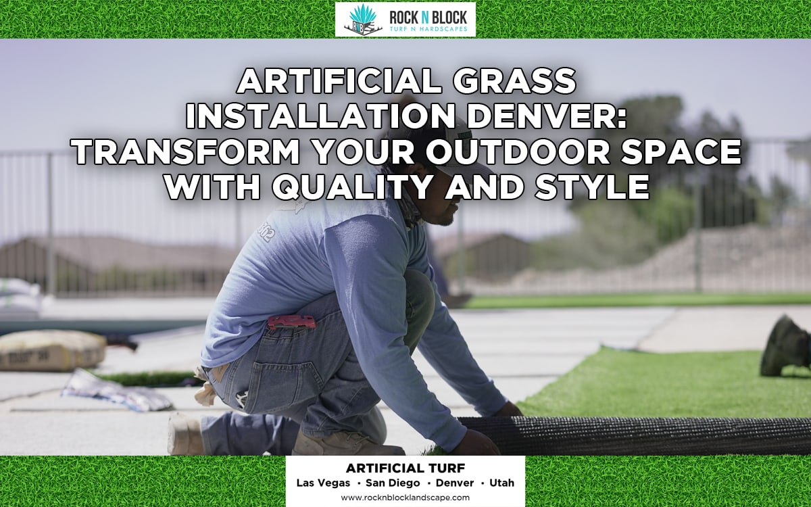

News
Understanding Polyethylene And Polypropylene Fibers
Understanding Polyethylene And Polypropylene Fibers
Exploring Nylon In Artificial Turf
Comparing Flat And Spine Fiber Shapes
Differences Between W Shaped And C Shaped Fibers
Material Properties That Influence Durability
Fiber Composition And Turf Appearance
An Overview Of Synthetic Fiber Manufacturing
Common Questions About Fiber Textures
Evaluating Polyethylene For Outdoor Use
The Role Of Material Choice In Turf Performance
Practical Insights On Fiber Thickness
How Fiber Shape Affects Surface Resilience
Evaluating Installation Complexity For Artificial Turf
Evaluating Installation Complexity For Artificial Turf
Steps To Prepare A Surface For Turf
Common Challenges With DIY Artificial Turf Projects
Potential Cost Factors When Hiring A Contractor
Observations From Homeowners Who Installed Turf Independently
Considering Equipment Requirements For Installation
Understanding The Time Commitment Of DIY Projects
Comparing Skill Levels Needed For Different Techniques
Tips For Working With A Professional Installer
Planning And Budgeting For Turf Installation
Observing Different Approaches For Seam Placement
Essential Preparations Before Scheduling Professional Services
About Us
Artificial Turf Las Vegas, NV

Las Vegas Residents Turn to Artificial Turf Amid Ongoing Drought
Mar 10, 2025
The issue of water scarcity, especially in drought-prone regions like Las Vegas, has been a significant concern for a long time.. And with the ongoing drought, this problem ain't getting any better!
Artificial Grass Demand Skyrockets in Las Vegas as Water Restrictions Tighten
Mar 10, 2025
As we cast our eyes towards the future, it's clear that artificial grass market in Las Vegas is poised to skyrocket due to tightening water restrictions.. Uh-oh, one might think this is a setback for the city, but it ain't!
Vegas Homeowners Cut Water Bills by Installing Synthetic Lawns
Mar 10, 2025
Las Vegas Schools Adopt Artificial Grass for Safer Playgrounds
Mar 10, 2025
Artificial Turf Replaces Natural Grass Across Las Vegas Golf Courses
Mar 10, 2025
Synthetic Lawns Offer Desert-Friendly Landscaping Solutions in Las Vegas
Mar 10, 2025
Las Vegas Casinos Choose Artificial Grass to Enhance Outdoor Spaces
Mar 10, 2025
How Artificial Turf is Helping Las Vegas Conserve Water Resources
Mar 10, 2025
Las Vegas Real Estate: Artificial Grass Boosting Home Values
Mar 10, 2025
Synthetic Turf Installations Double in Las Vegas Amid Climate Concerns
Mar 10, 2025
Pet-Friendly Artificial Grass Becomes Popular Among Vegas Families
Mar 10, 2025
Artificial Turf Emerges as Top Landscaping Choice for Vegas Businesses
Mar 10, 2025
Las Vegas Parks Switch to Artificial Grass Amid Water-Saving Initiatives
Mar 10, 2025
Artificial Grass Transforms Las Vegas Backyards into Low-Maintenance Oases
Mar 10, 2025
Vegas Communities Embrace Artificial Turf to Combat Desertification
Mar 10, 2025